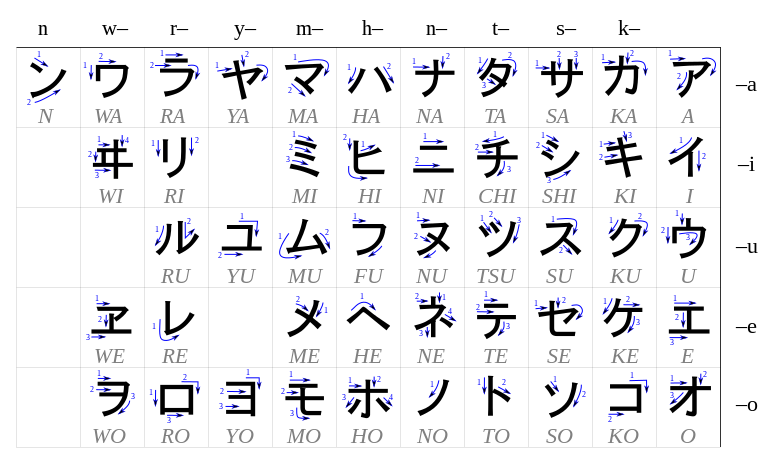

What is Katakana?
コレハカタカナダ。ソノカキカタハフツニカタカナヲツカイカタデハアリマセン。 ソノカタカナヲツカイカタハニホンジンデモムスカシイダロウ。
Above is an example of the Katakana alphabet. Plus a few kanji
Katakana is mainly used to bring loan words into the Japanese language, for example:
- Computer - コンピューター
- Orange - オレンジ
- Coffee - コーヒー
- McDonalds - マクドナルド
Below is a chart of all the Katakana characters
Below is a random set of Katakana
- コ
- ポ
- リ
- グ
- イ
Below is an ordered set of the Japnaese vowels
- ア
- イ
- ウ
- エ
- オ